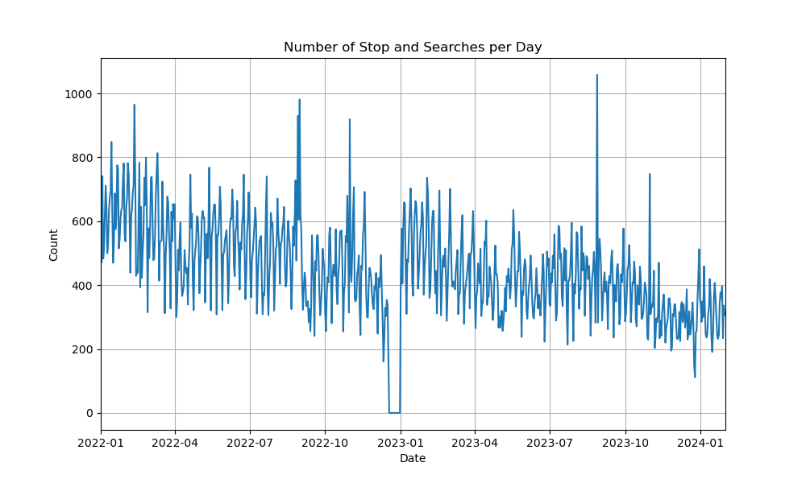
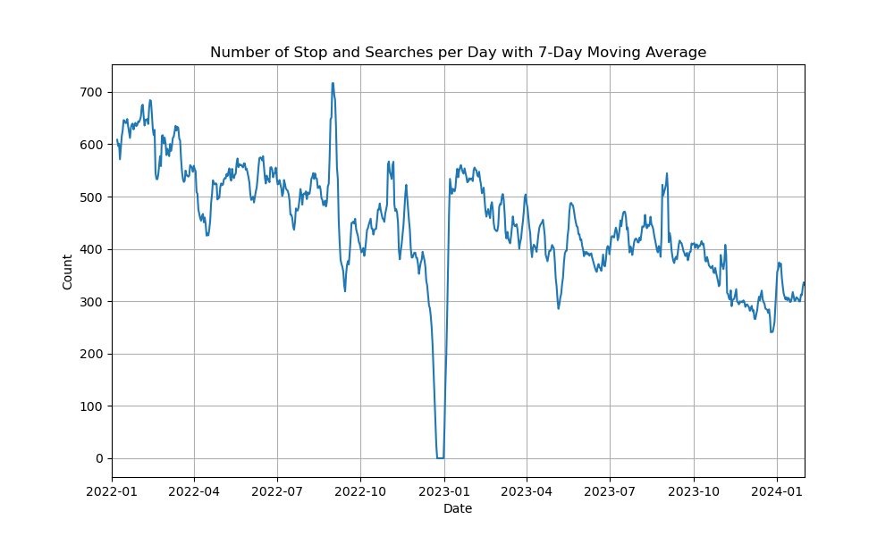
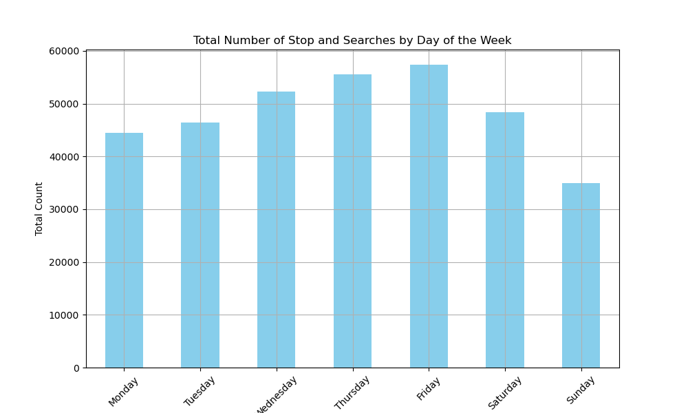
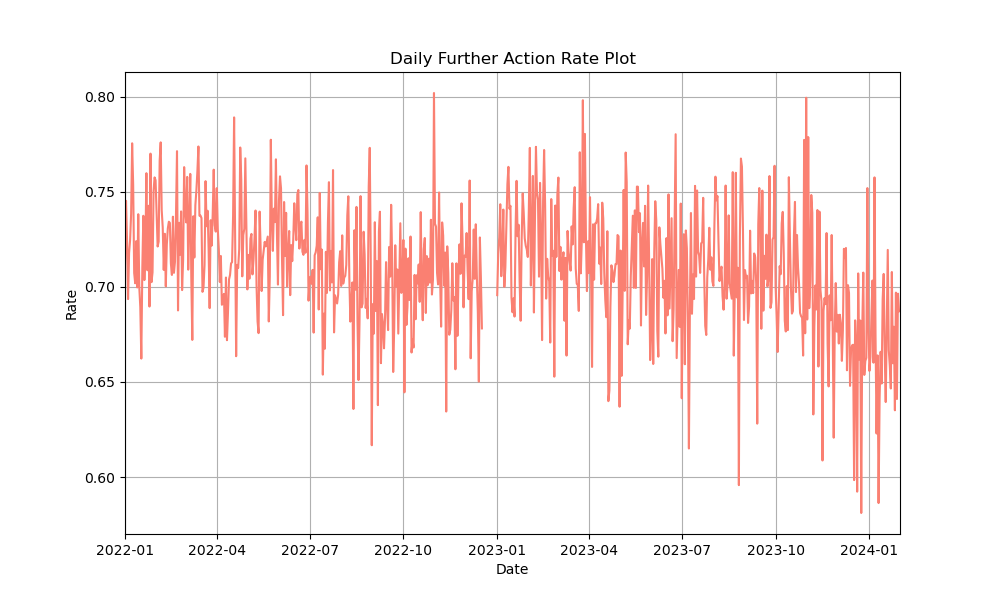
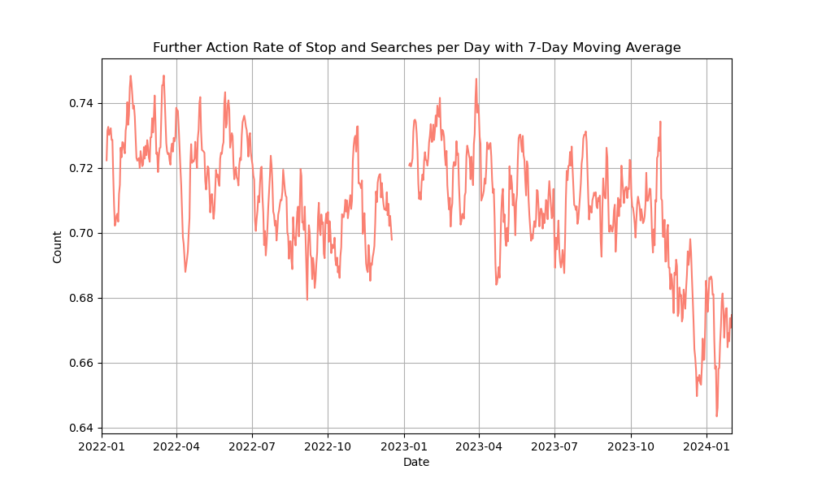
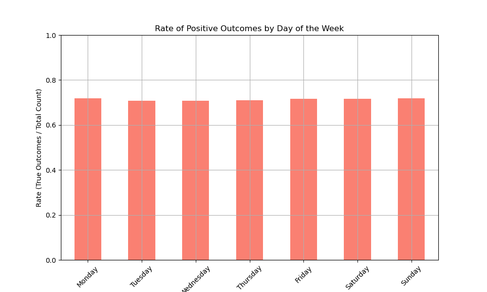
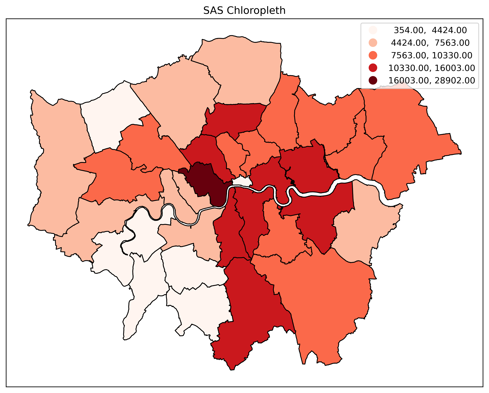
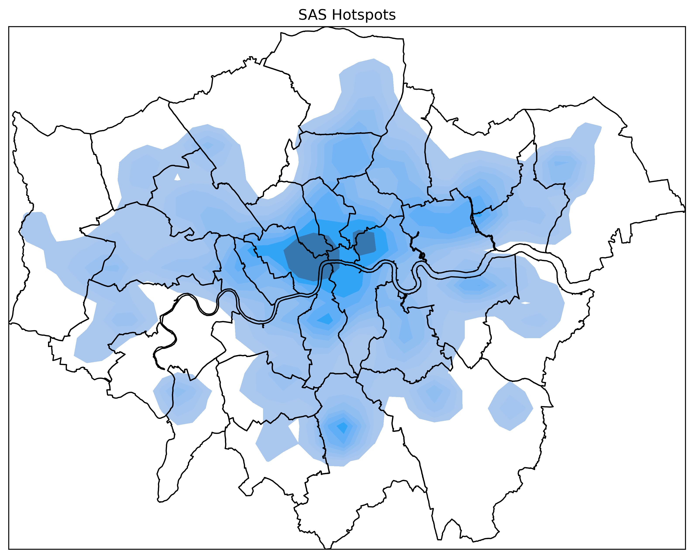

Exploratory Data Analysis
Temporal
The data exhibits significant daily fluctuations, with counts ranging from as low as zero (COVID) to peaks exceeding 1000 SAS in a single day. There is a general declining trend over the observed period, especially noticeable from mid-2022 onwards. Spikes in SAS activity occur sporadically, suggesting specific events or periods with heightened enforcement. The overall trend shows a gradual decrease in daily SAS counts, stabilising at lower values by the end of 2023 and early 2024.

The data shows an initial high level of SAS, with counts frequently exceeding 600 per day. This level starts to decline around mid-2022, with occasional peaks and troughs, indicating periods of increased and decreased enforcement activity.
From mid-2023 onwards, the trend shows a more consistent decline, with daily counts stabilising at lower values by the end of 2023 and into early 2024, around the 300-400 range. The moving average helps highlight these trends by reducing the noise from daily fluctuations, providing a clearer picture of the overall changes in SAS activity over the two-year period.

The data reveals that Thursday and Friday have the highest number of SAS, each exceeding 55,000, followed closely by Wednesday. The counts for Monday and Tuesday are slightly lower, each around 45,000. Saturday shows a further decrease with the total just under 50,000, while Sunday has the lowest count, significantly dropping to approximately 35,000. This distribution suggests that SAS activities are more frequent on weekdays, particularly towards the latter half of the week, and less common during weekends.

Throughout the observed period, the further action rate fluctuates between approximately 0.60 and 0.80. There is a noticeable pattern of variability in the further action rate, with no clear long-term trend of increase or decrease. However, from mid-2023 onwards, the further action rate shows a slight downward trend, with more frequent dips below 0.70. Despite these fluctuations, the further action rate remains relatively stable, consistently hovering around the 0.70 mark throughout most of the period.

he 7-day moving average of the further action rate of SAS in London from January 2022 to January 2024 highlights clearer trends by smoothing daily fluctuations. Initially, the rate is relatively high in early 2022, often exceeding 0.72. Over time, it shows a gradual decline, stabilising around 0.70 by mid-2022. In 2023, variability increases, with a noticeable downward trend from mid-2023 onwards, frequently dipping below 0.70 and stabilising around 0.66 by early 2024. This moving average helps to identify these overall trends more effectively.
 While Figure 3 demonstrates significant differences in the total number of SAS conducted on different days of the week, Figure 5 shows the rate of further action outcomes (true outcomes) by day of the week, and it indicates much smaller variations.
The further action rates for each day are relatively consistent, all hovering around the 0.68 to 0.72 range. This suggests that despite the variations in the total number of SAS performed on different days, the effectiveness, in terms of further actions resulting from these searches, remains fairly stable throughout the week.

Spatial
The map reveals significant spatial variation in the frequency of SAS. Central and inner London boroughs such as Westminster, Camden, and Southwark exhibit the highest SAS counts, depicted in the darkest red shades. In contrast, outer boroughs like Richmond upon Thames, Kingston upon Thames, and Sutton show the lowest counts, illustrated in lighter shades. This pattern suggests a higher concentration of SAS activities in central urban areas, likely reflecting areas with higher population density and more active policing.
 Compared to the choropleth map, the heatmap offers a more nuanced view of SAS distribution by showing gradual changes in density rather than distinct boundaries between boroughs. This allows for a clearer identification of specific high-density areas within and across boroughs, providing a more detailed and accurate representation of where SAS activities are most concentrated in London. The smooth transitions and focus on density in the heatmap make it a more effective tool for visualising and analysing the spatial patterns of SAS.
